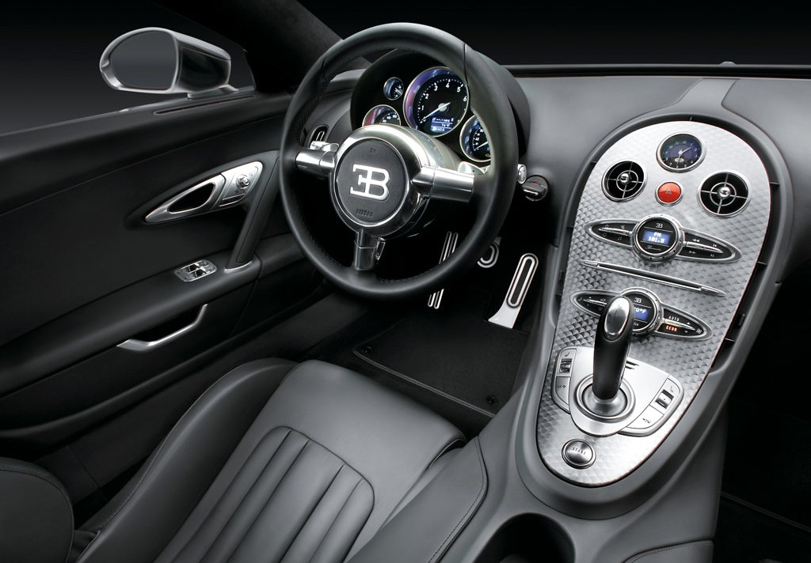
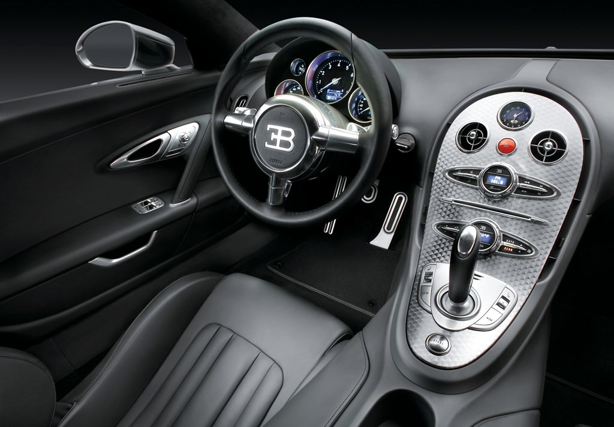

{ High Performance Automobiles }
Super Cars
{ World Exclusives }
Bugatti Veyron
 

The Bugatti Veyron EB 16.4 is a mid-engined grand touring car, designed and developed by the Volkswagen Group and manufactured in Molsheim, France by Bugatti Automobiles S.A.S.
The Super Sport version of the Veyron is the fastest street-legal production car in the world, with a top speed of 431.072 km/h (267.856 mph).[4] The original version has a top speed of 408.47 km/h (253.81 mph).[5] It was named Car of the Decade (2000–2009) by the BBC television programme Top Gear. The standard Bugatti Veyron won Top Gear's Best Car Driven All Year award in 2005.
On 6 April 2013, Bugatti set the record for having the highest top speed of any roadster in the world with the Veyron Grand Sport Vitesse, reaching on average a top speed of 408.84 km/h (254.04 mph).[6][7]
The Veyron's chief designer was Hartmut Warkuss, and the exterior was designed by Jozef Kabaň of Volkswagen, with much of the engineering work being conducted under the guidance of engineering chief Wolfgang Schreiber.
A number of special variants have been produced. In December 2010, Bugatti began offering prospective buyers the ability to customize exterior and interiors colours by using the Veyron 16.4 Configurator application on the marque's official website.